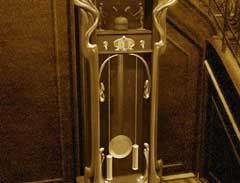

| 概要 | 地図 |
| 淡いヒント集 | ヒント集 | 的確なヒント集 |
| 攻略最短ルート |
| 場所選択に戻る |
夢の世界
|
止まった時計
 ・この時計はなぜ止まっているのか? ・この時計を動かすにはどうしたらよいか? ・時計が動けば、世界の時間が動く。では、この世界の時間はどのようにして決まっているのか?
二階の扉

・鍵がかかっている。どうすれば開くか? ・鍵は誰が持っているのか? ・この中には誰がいるのか?
ハンス少年

・彼は物作りに夢中である。どうすれば彼の気をこちらへ向けることができるか? ・ハンスを夢の世界から、本当の世界へ引き戻すにはどうすればよいのか?
| << 戻る |
|
| 場所選択に戻る |
| 概要 | 地図 |
| 淡いヒント集 | ヒント集 | 的確なヒント集 |
| 攻略最短ルート |
Syberia II
| 目次へ戻る | ページの上部へ |